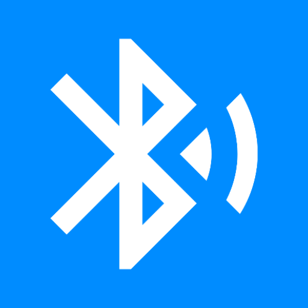
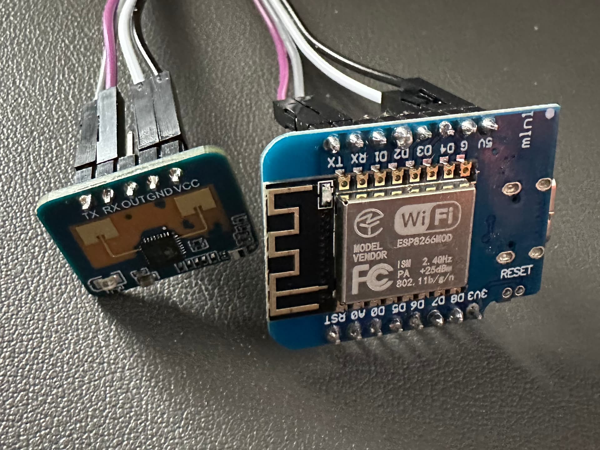

Installatie
Voorbereiding: Zorg ervoor dat u de bestanden hebt geïnstalleerd om de ESP8266 of ESP32 te laten communiceren met
uw pc/laptop. Kijk hier voor meer informatie bij de foutberichten pagina.
En u moet de ESP verbonden hebben aan uw pc of laptop met een kabel die zowel stroom als gegevens
transporteert.
U kunt de knop hieronder gebruiken om het tools firmware rechtstreeks naar uw device te installeren
via USB vanaf de browser.
Kies uw product om het om te zetten in een tool voor Home Assistant.
Geen programma of software vereist.
vindriktning
verbind de D1 Mini, het liefst met een USB-poort (en dus een 5V-regulator). Er lijken veel versies
beschikbaar te zijn met licht verschillende functionaliteiten op dat gebied.
Open het IKEA Vindriktning-apparaat en let op de testpunten op de rand van de printplaat.
Verbind:
- D1: 5V -> V: +5V
- D1: G -> V: GND
- D1: D2 -> C: REST

bluetoothproxy
De Bluetooth proxy van ESPHome geeft Home Assistant maximaal 3 simultane actieve verbindingen te zien.
Apparaten die een continue actieve verbinding onderhouden zullen een van deze permanent gebruiken, terwijl
apparaten die periodiek hun verbindingen verbroken en hersteld hebben, toestaan dat er meer dan 3 van hen
worden gebruikt (op statistiek gebaseerd). Passief gepresenteerde sensorgegevens die door zekere apparaten
worden gepresenteerd zonder actieve verbindingen worden afzonderlijk van deze ontvangen en zijn niet
beperkt tot een specifieke hoeveelheid.

Centrale afzuiging
info komt nog

mmwave
ESP8266 LD2410C
5V ------ VCC
GND -------
GND
RX ------ Uart-Tx
TX ------- Uart-Rx
| Type |
Radar |
| Detectietype |
Afstand |
| Aanwezigheid |
Instelbaar |
| Instelbare detectieafstand |
Ja |
| Instelbare gevoeligheid |
Ja |
| Minimaal meetbereik [cm] |
0.1 |
| Maximaal meetbereik [cm] |
500 |
| Kleinste resolutie [mm] |
10 |
| Maximale detectiehoek [°] |
120 |
| Instelbare vertragingstijd |
Ja |
| Werkfrequentie [GHz] |
24 |

Foutoplossing
- Er kan noodzakelijk zijn dat u handmatig de bootloader-modus instelt voordat u probeert de ESP te
flashen met de WebFlasher.
- Probeer de `BOOT`-knop op uw bord ingedrukt te houden totdat u ziet dat de WebFlasher het flashgeheugen
aan het wissen is en daadwerkelijk de firmware installeert. Dit kan helpen als een reset wordt uitgevoerd
in de voorbereidingsstap, aangezien het ingedrukt houden van de `BOOT`-knop ervoor zorgt dat de ESP32
opnieuw opstart in de bootloader-modus.
Drivers
If the serial port is not showing up, your computer might be missing the
drivers for the USB serial chip used in your ESP device.
These drivers
work for most ESP devices: